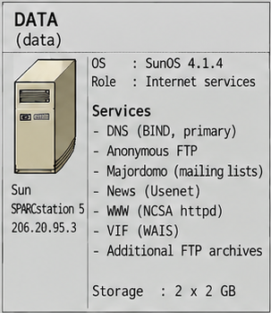

Systems Overview · 1995
DATA (data)
DATA era l'host dei servizi pubblici al centro della rete: risoluzione dei nomi, FTP anonimo, news Usenet, mailing list e i principali contenuti web e host virtuali.

images/internetforce_server_map.png (Systems Overview 1995).Identità del sistema
- Hostname
data- Indirizzo
206.20.95.3· segmentofw-data206.20.95.10- Piattaforma
- Sun SPARCstation 5
- OS
- SunOS 4.1.4
- Ruolo
- Servizi Internet: DNS primario, FTP, news, web, mailing list.
Servizi e configurazione
| Servizio / ruolo | Descrizione | Configurazione / evidenza | Documentazione |
|---|---|---|---|
| DNS primario (BIND 4) | Nameserver autoritativo per i domini Internet Force e ospitati. | dns/named.boot · dns/named-data/ · dns/ | DNS |
| FTP anonimo | Archivio FTP pubblico in chroot (Wu-ftpd, shell /ftponly). |
system/inetd.conf · ../users/system/ftp-world.txt · ../users/system/ftpusers | Web, FTP, news e mailing list |
| Majordomo | Liste di distribuzione con archivi HTML. | majordomo/ | Liste di distribuzione |
| News Usenet | Servizio news alimentato da news.ios.com (NNTP). |
nessuna configurazione recuperata (la regola FireWall-1 documenta il feed) | Web, FTP, news e mailing list |
| WWW / NCSA httpd | Server web e host virtuali dei clienti. | web/httpd.conf · web/ | Web, FTP, news e mailing list |
| Hosting virtuale (VIF) | Indirizzi dedicati per sito tramite Virtual Interface su SunOS. | ../sun-vif/ · dns/new_dns-HOWTO.txt | Web, FTP, news e mailing list |
| Archivi FTP aggiuntivi | Mirror e archivi pubblici aggiuntivi. | artifacts/scripts/automatic_mirror-HOWTO.txt | Web, FTP, news e mailing list |
Nelle mappe
Documentazione tecnica completa
Apri il README canonico di DATA
La pagina HTML è una presentazione compatta; il README Markdown è la fonte canonica. Il WAIS compare fra i servizi storici; per VIF/WAIS si veda il materiale VIF.